Mass Bass Instrument
Profundum is a mass bass instrument. It does not stack layers to build a bass; it plays one bass voice and lets you decide how heavy that voice is. A note can be a pure sub, a resonant body, a harmonic growl or a driven, folded bite, and in every one of those places the low end stays centred and present.
Two ideas carry the whole instrument:
Four personality macros (Weight, Dark/Bright, Tight/Loose, Clean/Violent) and the Mass knob steer the sound on top of that, and Motion moves it over time.
Formats: VST3 (Windows, macOS, Linux) and Audio Unit (macOS). One MIDI input, one stereo output.
MIDI in ──────────── notes, pitch bend, mod wheel (CC 1), sustain (CC 64), channel pressure
│
▼
Note handling ────── Mono (priority, legato, glide) or Poly (up to 8 voices)
│
▼
Control layer ────── Bass Morph (A → B) → macros → Motion → Mass, once every 32 samples
│
▼
Pitch ────────────── Drop: each note starts above its pitch and falls onto it
│
▼
The Mass ─────────── core spectrum (Depth, Body, Edge, Spectral Shift, Stiffness, Phase) + excitation
│ → Shape → (+ Anchor Fold Feed) → Harmonic Fold → Character
│
The Anchor ───────── a separate sub tone beside the Mass, identical in left and right
│
▼
Amp envelope ─────── Attack, Decay, Sustain, Release per voice (the Mass and the Anchor together)
│
▼
Voice sum ────────── → Mass dynamics (Transient Attack / Sustain, compression)
│
▼
Stereo field ─────── Image Mode: Solid, Spread or Wide; the band below the crossover stays centred
│
▼
Output ───────────── DC blocking → true-peak limiter at Output Ceiling → Output GainThe Anchor is never widened: it is the same signal in both channels in every image mode. The only route by which it reaches a nonlinear stage is Anchor Fold Feed, which you set yourself.
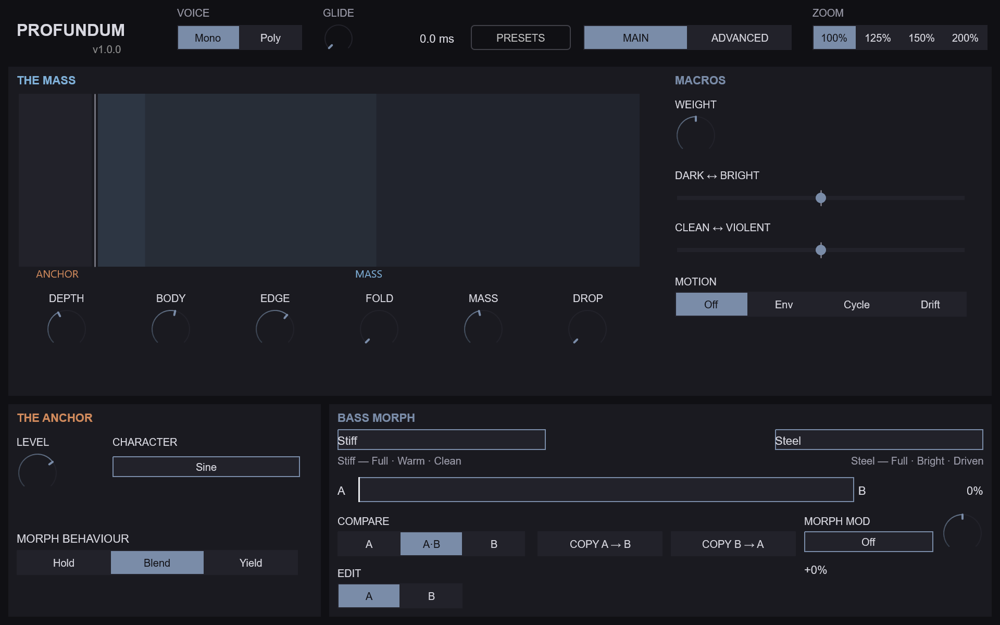
The editor is a fixed 960 × 600 window with four zoom steps (100 %, 125 %, 150 % and 200 %). It has two pages that share one header.
Every parameter stays automatable from the host whichever page is showing, except Edit Target, which is deliberately not automatable (see Edit Target and automation below). Every control carries a tooltip.
The live harmonic display shows the measured harmonics of the sound you hear, with the Anchor in its own lane at the left. It only reads; nothing you do in it changes the sound.
The four personality macros are Weight, Dark/Bright, Tight/Loose and Clean/Violent. Weight, Dark ↔︎ Bright and Clean ↔︎ Violent sit in the MACROS column of the Main page; Tight ↔︎ Loose is in the Advanced page’s Core Spectrum section.
Three things are worth knowing:
The table gives each macro’s targets and how far a macro at 100 % moves each one. A macro at 0 % moves the same targets the same distance the other way. The travel is linear in between: at 75 % a target moves half the distance it moves at 100 %.
| Macro | Target | Travel at 100 % |
|---|---|---|
| Weight | Depth | +56 % |
| Body | +56 % | |
| Anchor Level | +56 % | |
| Dark/Bright | Edge | +50 % |
| Spectral Shift | +50 % | |
| Character Tone | +30 % | |
| Shape | none (the row is kept with amount 0) | |
| Tight/Loose | Attack | time × 32 |
| Decay | time × 32 | |
| Release | time × 32 | |
| Transient Attack | −15 dB | |
| Compression | less toward Loose, more toward Tight (it has no control of its own) | |
| Clean/Violent | Excitation Mix | +50 % |
| Excitation Drive | +50 % | |
| Harmonic Fold | +50 | |
| Character Amount | +50 % |
The amp times are multiplied and then held inside 0.1 ms … 10 000 ms. At 100 % Tight/Loose takes the default 10 ms attack to 320 ms; at 0 % it takes it to about 0.3 ms. Spectral Shift spans −100 … +100 %, so its +50 % is a quarter of its range.
Compression belongs to the Mass dynamics and has no knob; Tight/Loose is the only control that reaches it directly. Mass adds compression only above 50, so at Mass 50 or below the Loose half of Tight/Loose has no compression left to take away. The Tight half acts at every Mass.
| Control | Range | Default | Notes |
|---|---|---|---|
| Voice Mode | Mono / Poly | Mono | Mono plays one note at a time, with glide and legato. Poly plays chords; the voice count is Polyphony on the Advanced page |
| GLIDE (Portamento) | 0 – 10 000 ms | 0 ms | Time to slide between notes in Mono. The readout’s unit follows Glide Mode |
| PRESETS | — | — | Opens the preset browser (see Presets) |
| MAIN / ADVANCED | — | Main | Switches page. The page and tab choice is not saved |
| ZOOM | 100 / 125 / 150 / 200 % | 100 % | Editor size. The same control appears in the SETTINGS tab |
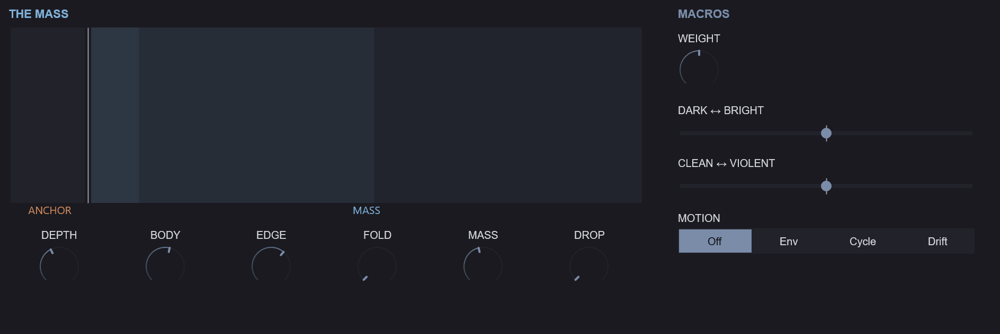
The upper half of the Main page is THE MASS: the live harmonic display, six large knobs and the macros.
| Knob | Parameter | Range | Default | Description |
|---|---|---|---|---|
| DEPTH | Depth | 0 – 100 % | 50 % | High keeps the energy in the fundamental; low spreads it up through the harmonics |
| BODY | Body | 0 – 100 % | 50 % | The weight of the low harmonics that make the note sound full |
| EDGE | Edge | 0 – 100 % | 50 % | The bite of the upper harmonics |
| FOLD | Harmonic Fold | 0 – 100 | 0 | Folds the sound back on itself to grow new harmonics |
| MASS | Mass | 0 – 100 | 50 | How heavy the note feels. Above 50 heavier, below 50 lighter; 50 is neutral |
| DROP | Drop Amount | 0 – 48 st | 0 st | Each note starts this many semitones above its pitch and falls onto it |
Mass is the instrument’s own law. One knob moves seven things together: the core Depth and Body, the length of the transient, the fold, the compression, the Anchor Level and an output trim. The trim is calibrated so that a heavier note sounds heavier rather than only louder. At exactly 50 Mass changes nothing. Mass is smoothed: a full 0 → 100 sweep takes 40 ms, so automating it does not click. The mod wheel and channel pressure add to Mass while you play (see Performance Notes).
Beside the knobs, the MACROS column holds Weight (a knob), Dark/Bright and Clean/Violent (centred sliders) and the MOTION selector, which is the Motion Source parameter (Off / Env / Cycle / Drift). The Motion target, amount and timing are on the Advanced page’s MODULATION tab.
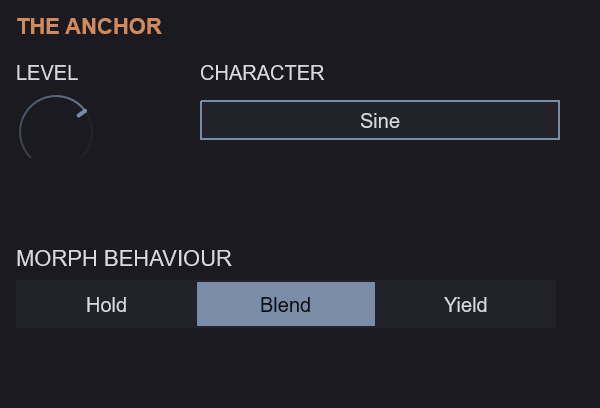
| Control | Parameter | Range | Default | Description |
|---|---|---|---|---|
| LEVEL | Anchor Level | 0 – 100 % | 50 % | How loud the stable sub tone under the mass is |
| CHARACTER | Anchor Waveform | Sine / Triangle / Rounded Sine / Asymmetric Sine / Octave Down | Sine | The shape of the sub tone |
| MORPH BEHAVIOUR | Anchor Morph Mode | Hold / Blend / Yield | Blend | How the Anchor follows the Bass Morph |
The Main page’s CHARACTER menu is the Anchor Waveform. The colouring stage called Character is a different control, in the Advanced page’s Shape & Character section.
The Anchor / Mass split. The Anchor is its own sub oscillator under the Mass, the same in both channels. The Mass can be widened, folded and driven; the Anchor stays a clean, centred fundamental. In the Lock, Punch and Ghost modes the Anchor plays the note’s own pitch and ignores the Drop; in Follow it follows the Mass, Drop included. Anchor Mode and the Punch and Ghost timings are in the Advanced page’s Sub Anchor section. Weight and Mass both reach the Anchor Level, so the balance between the two parts moves with them.
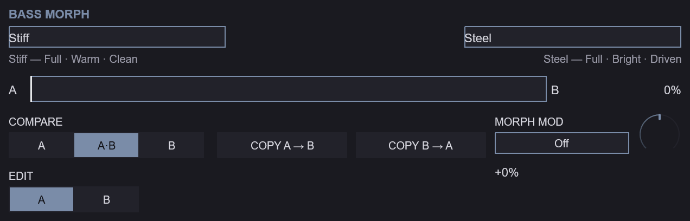
| Control | Parameter | Range | Default | Description |
|---|---|---|---|---|
| A ━━●━━ B | Morph Position | 0 – 100 % | 0 % | Moves the sound from endpoint A to endpoint B |
| EDIT A / B | Edit Target | A / B | A | Which endpoint the sound parameters show and edit. Not automatable |
| COMPARE | — | A / A·B / B | A·B | Hear endpoint A alone, the morph, or endpoint B alone |
| COPY A → B, COPY B → A | — | — | — | Copy one endpoint’s sound onto the other. The name is not copied |
| name fields | — | up to 31 bytes | A, B | A name for each endpoint, saved with the preset |
| MORPH MOD | Morph Mod Source, Morph Mod Amount | see Morph Modulation | Off, 0 % | What moves the morph by itself, and how far |
Under each name a three-word caption describes how that endpoint sounds (its shape, colour and force). The caption is computed from the endpoint’s settings and is never stored.
Morph. Sixty sound parameters hold an A value and a B value: everything in Core Spectrum, Excitation & Fold, Shape & Character, Mass, Sub Anchor (except Anchor Morph Mode), the Stereo field, Drop, the amp envelope and Motion, plus the Mass knob itself. Morph Position blends between them. Continuous values move smoothly; stepped values (such as Character or Image Mode) change over once, near the middle of the travel, with a little hysteresis so they never flicker. Morph Ramp Time (Advanced page, Morph Behaviour section) sets how quickly the sound follows a change of Morph Position. The global controls (Output Gain, Voice Mode, Polyphony, Output Ceiling), the macros, the note behaviour and the morph controls hold one value each.
Anchor Morph Mode decides how the Anchor takes part in the morph. Hold keeps endpoint A’s Anchor all the way to B. Blend moves the Anchor with the morph, like everything else. Yield keeps A’s Anchor for most of the travel and hands over to B’s late (the Anchor follows the cube of the morph position). With Hold on and Edit Target on B, B’s Anchor settings are stored but not heard; the Sub Anchor section dims them and shows Held at A.
Edit Target and automation. Switching Edit Target never changes the sound; it changes which endpoint the knobs show and write. Host automation of a sound parameter writes the endpoint selected by Edit Target when it plays back, so a lane recorded while editing A writes B if Edit Target is B at playback. Edit Target itself is not automatable, and it is saved with the project.
Compare. COMPARE A or B plays that endpoint alone, whatever Morph Position says. Choosing A or B also switches Edit Target to that side, so what you hear is what you edit; A·B returns to the morph and leaves Edit Target alone. Compare only changes what you hear: it is never saved, and it returns to A·B when a preset or project loads.
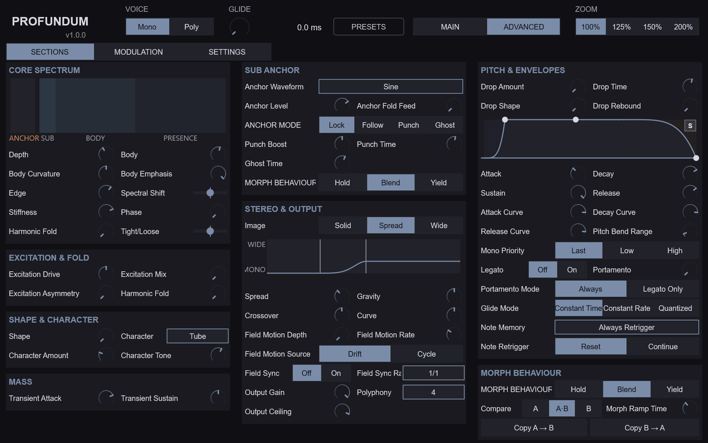
The SECTIONS tab holds eight sections. Two controls appear twice (Harmonic Fold in Core Spectrum and in Excitation & Fold; Anchor Morph Mode in Sub Anchor and in Morph Behaviour); both copies are the same parameter.
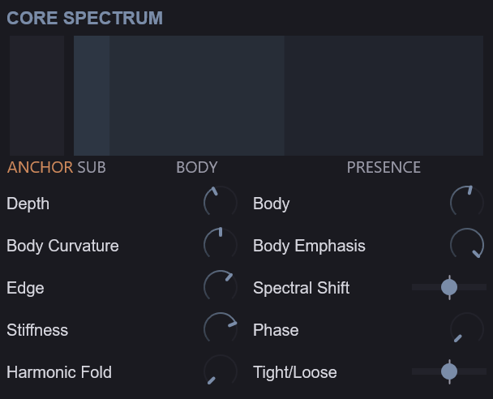
The core is the harmonic recipe of the Mass.
| Parameter | Range | Default | Description |
|---|---|---|---|
| Depth | 0 – 100 % | 50 % | How steeply the harmonics fall away above the fundamental. Higher is rounder, lower is richer |
| Body | 0 – 100 % | 50 % | Lifts the low harmonics (about 2 to 8) that carry the bass’s body |
| Body Curvature | 0 – 100 % | 50 % | Narrows or broadens the region Body lifts |
| Body Emphasis | −100 – 0 % | 0 % | At 0 all harmonics sound; toward −100 % the even harmonics fade for a hollower tone |
| Edge | 0 – 100 % | 50 % | Lifts the upper harmonics that give the bass its bite |
| Spectral Shift | −100 – +100 % | 0 % | Moves the Body and Edge regions down (darker) or up (brighter) together |
| Stiffness | 0 – 100 % | 0 % | Bends the upper harmonics sharp of the harmonic series, as a stiff string or a metal bar does, for a metallic, bell-edged bass. Higher notes are stiffer, as on a piano; 0 keeps the exact series |
| Phase | 0 – 100 % | 0 % | Turns the upper harmonics against the fundamental. The clean tone hardly changes, but the waveform grows peakier, so Harmonic Fold and Character bite harder. 0 is the smoothest. A change on a held note glides over at most 100 ms |
| Harmonic Fold | 0 – 100 | 0 | Folds the waveform back on itself to add new harmonics. 0 is clean |
| Tight/Loose | 0 – 100 % | 50 % | The fourth macro: toward Tight, shorter attack, decay and release, a harder transient and more compression; toward Loose the reverse |
A second harmonic display in this section shows the measured harmonics of the sounding note after Fold and Character, before the amp envelope. It shows the resolved sound, including the morph, the macros and Motion.
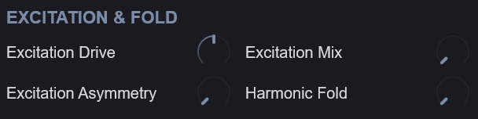
| Parameter | Range | Default | Description |
|---|---|---|---|
| Excitation Drive | 0 – 100 % | 50 % | How hard the excitation stage is driven |
| Excitation Mix | 0 – 100 % | 0 % | Blends the driven excitation into the clean tone. 0 is clean |
| Excitation Asymmetry | 0 – 100 % | 0 % | Biases the drive for uneven, even-harmonic grit |
| Harmonic Fold | 0 – 100 | 0 | The same parameter as in Core Spectrum |
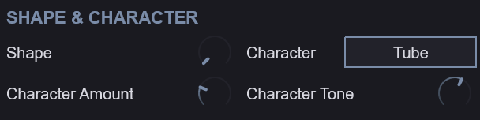
| Parameter | Range | Default | Description |
|---|---|---|---|
| Shape | 0 – 100 % | 0 % | Morphs the curve of the shaping stage |
| Character | Tube / Wavefold / Rectify / Bite / Crush / Fracture | Tube | The type of colouring stage |
| Character Amount | 0 – 100 % | 0 % | How much of the Character stage is heard |
| Character Tone | 0 – 100 % | 50 % | Darkens or brightens the Character stage |
In the Wide image mode the Character stage adds a small offset between the two channels, so in Wide the correlation of the sub band depends on that offset pair.
| Parameter | Range | Default | Description |
|---|---|---|---|
| Transient Attack | −12 – +12 dB | +6 dB | Boosts or softens the start of each note |
| Transient Sustain | −12 – +12 dB | 0 dB | Boosts or softens the body that follows the start |
The Mass knob itself is on the Main page; these two shape the dynamics stage that Mass also drives.
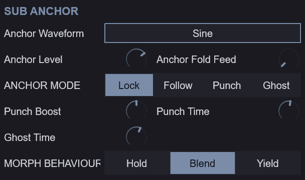
| Parameter | Range | Default | Description |
|---|---|---|---|
| Anchor Level | 0 – 100 % | 50 % | Level of the pure sub tone under the bass |
| Anchor Waveform | Sine / Triangle / Rounded Sine / Asymmetric Sine / Octave Down | Sine | The shape of the sub tone |
| Anchor Mode | Lock / Follow / Punch / Ghost | Lock | How the sub tone tracks the note |
| Punch Boost | 0 – 12 dB | 6 dB | Extra sub level at the note start in Punch mode |
| Punch Time | 5 – 250 ms | 40 ms | How long the Punch boost lasts |
| Ghost Time | 1 – 100 ms | 15 ms | The timing of the dip in Ghost mode |
| Anchor Fold Feed | 0 – 100 % | 0 % | Sends the sub tone into Harmonic Fold |
| Anchor Morph Mode | Hold / Blend / Yield | Blend | The same parameter as MORPH BEHAVIOUR on the Main page |
The four modes: Lock holds the sub tone steady on the played pitch. Follow tracks the Mass’s pitch, so the Drop and the glide move it too. Punch adds Punch Boost to the start of each note for Punch Time. Ghost dips the sub tone at the start of each note for Ghost Time, a kick-like thump.
Anchor Fold Feed is the one route by which the Anchor reaches a nonlinear stage. At 0 the fold never touches the Anchor; turned up, the sub tone itself is folded with the Mass.
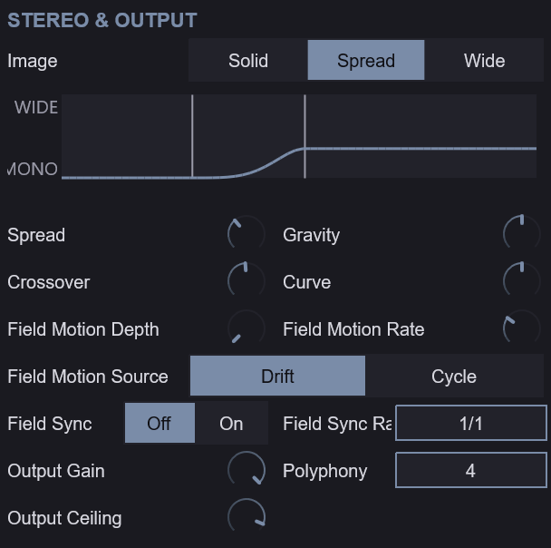
| Parameter | Range | Default | Description |
|---|---|---|---|
| Image Mode | Solid / Spread / Wide | Spread | Solid is mono, Spread widens above the crossover, Wide adds the Character offsets |
| Spread | 0 – 100 % | 50 % | Overall stereo width above the crossover |
| Gravity | 0 – 100 % | 50 % | How far below the crossover the width begins. At 0 the width reaches lowest |
| Crossover | 60 – 250 Hz | 120 Hz | The frequency below which the bass stays centred |
| Curve | 0 – 100 % | 50 % | How quickly the width rises between the low and high knees |
| Field Motion Depth | 0 – 100 % | 0 % | How much the width moves over time |
| Field Motion Rate | 0 – 100 % | 30 % | Speed of the width movement |
| Field Motion Source | Drift / Cycle | Drift | Drift wanders, Cycle repeats |
| Field Sync | Off / On | Off | Lock the width movement to the host tempo |
| Field Sync Rate | note values | whole note | Note value of the synced width movement. Synced rates above 1 Hz fold into 0.5 – 1 Hz |
| Output Gain | −∞ – 0 dB | 0 dB | Final level |
| Polyphony | 1 – 8 | 4 | How many notes can sound at once in Poly |
| Output Ceiling | −12 – 0 dBTP | −1 dBTP | The highest true-peak level the output reaches |
A small curve view shows how wide each frequency is for the endpoint being edited: 0 is mono, 1 is fully wide. Field Motion is not drawn on it.
Mono safety. Width is pan-only and constant-power, and the sub band keeps a correlation of at least 0.9989 in every image mode. Even at Gravity 0, side content below twice the crossover is attenuated by about 29 dB. The Anchor is identical in both channels throughout, and in Solid the whole output is.
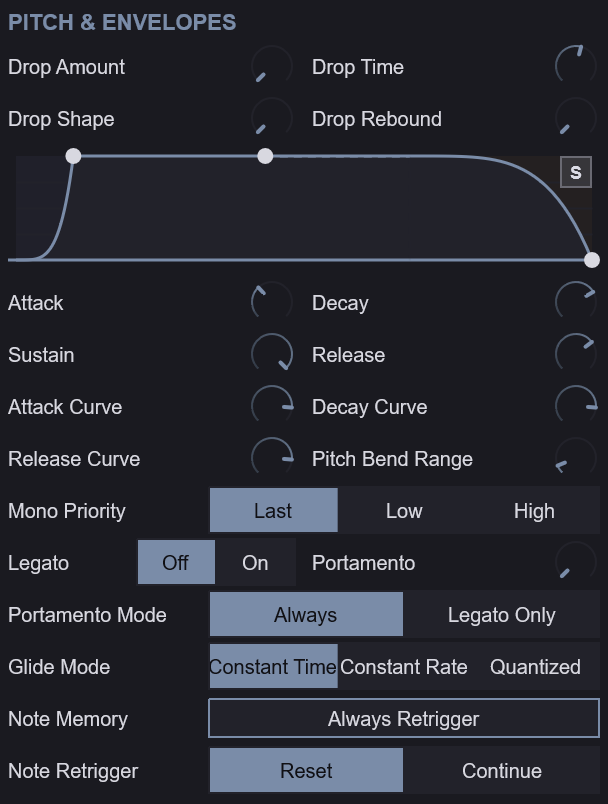
Drop — the pitch fall into each note.
| Parameter | Range | Default | Description |
|---|---|---|---|
| Drop Amount | 0 – 48 st | 0 st | How far the pitch falls into each note, in semitones |
| Drop Time | 1 – 4000 ms | 100 ms | How long the pitch drop takes |
| Drop Shape | 0 – 100 % | 0 % | The curve of the pitch drop |
| Drop Rebound | 0 – 100 % | 0 % | How much the pitch overshoots and settles at the end of the drop |
Amp envelope — one per voice, shaping the Mass and the Anchor together. The envelope display can be dragged to set Attack, Decay, Sustain and Release directly.
| Parameter | Range | Default | Description |
|---|---|---|---|
| Attack | 0.1 – 10 000 ms | 10 ms | Time to full level |
| Decay | 0.1 – 10 000 ms | 50 ms | Time to fall to the Sustain level |
| Sustain | 0 – 100 % | 50 % | Level held while the key is down |
| Release | 0.1 – 10 000 ms | 100 ms | Time to silence after the key is released |
| Attack Curve | −100 – +100 % | +70 % | Bends the attack segment |
| Decay Curve | −100 – +100 % | +70 % | Bends the decay segment |
| Release Curve | −100 – +100 % | +70 % | Bends the release segment |
Note behaviour
| Parameter | Range | Default | Description |
|---|---|---|---|
| Mono Priority | Last / Low / High | Last | Which held note sounds in Mono |
| Legato | Off / On | Off | Overlapping notes glide without restarting the envelope |
| Portamento | 0 – 10 000 ms | 0 ms | Glide time between notes (the header’s GLIDE knob) |
| Portamento Mode | Always / Legato Only | Always | Glide on every note, or only between overlapping notes |
| Glide Mode | Constant Time / Constant Rate / Quantized | Constant Time | How the glide is timed |
| Note Memory | Always Retrigger / Legato / Envelope Retrigger / Oscillator Continuous | Always Retrigger | What a new note restarts |
| Note Retrigger | Reset / Continue | Reset | Reset restarts the note’s movement, Continue carries it on |
| Pitch Bend Range | 0 – 24 st | 2 st | Bend wheel range in semitones |
Note Memory decides what carries over from one note to the next in Mono. Always Retrigger restarts the note from the start every time. Legato carries the phase on across overlapping notes, so a line joins up. Envelope Retrigger restarts the envelope but not the oscillator. Oscillator Continuous lets the oscillator run on through every note.
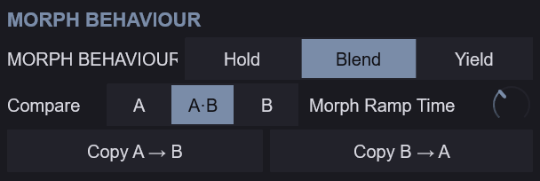
| Parameter | Range | Default | Description |
|---|---|---|---|
| Anchor Morph Mode | Hold / Blend / Yield | Blend | The same parameter as on the Main page |
| Morph Ramp Time | 5 – 2000 ms | 40 ms | How quickly the sound follows a change of the morph position, including the movement of Morph Modulation |
This section repeats the Compare and Copy controls of the Main page’s Bass Morph band.
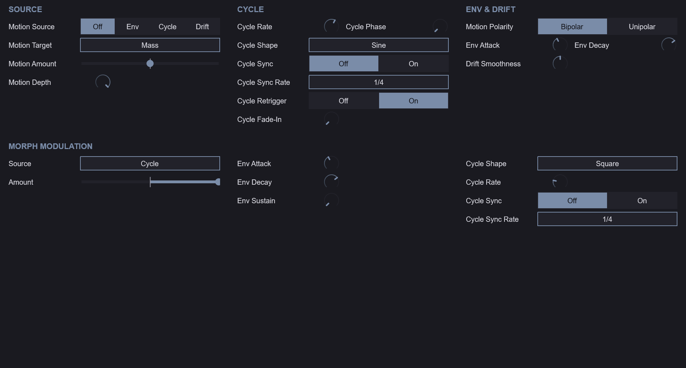
Motion is one modulation source per voice, aimed at one target. The tab has three columns: SOURCE, CYCLE and ENV & DRIFT.
| Parameter | Range | Default | Description |
|---|---|---|---|
| Motion Source | Off / Env / Cycle / Drift | Off | What moves the sound: an envelope, a repeating cycle or a random drift |
| Motion Target | Mass / Depth / Body / Edge / Shift | Mass | What Motion moves |
| Motion Amount | −100 – +100 % | 0 % | How far and in which direction Motion moves its target |
| Motion Depth | 0 – 100 % | 100 % | Overall Motion depth |
| Cycle Rate | 0.01 – 20 Hz | 1 Hz | Speed of the Cycle source |
| Cycle Shape | Sine / Triangle / Sawtooth / Square / S&H / Smooth Random | Sine | Waveform of the Cycle source |
| Cycle Sync | Off / On | Off | Lock the Cycle to the host tempo |
| Cycle Sync Rate | note values | 1/4 | Note value of the synced Cycle |
| Cycle Phase | 0 – 360° | 0° | Start phase of the Cycle |
| Cycle Retrigger | Off / On | On | Restart the Cycle on each note |
| Cycle Fade-In | 0 – 5000 ms | 0 ms | Time for the Cycle to reach full depth |
| Motion Polarity | Bipolar / Unipolar | Bipolar | Bipolar Env rests at −amount between notes; Unipolar rests at the set value |
| Drift Smoothness | 0 – 100 % | 50 % | How smoothly the Drift source wanders |
| Env Attack | 0.1 – 10 000 ms | 10 ms | Rise time of the Env source |
| Env Decay | 0.1 – 10 000 ms | 300 ms | Fall time of the Env source |
With Motion Amount at 0, Motion does nothing whatever the source, so set an amount before judging a source. The macro rings on the knobs do not show Motion.
Morph Modulation moves the Bass Morph by itself. It is one source shared by every voice, and it moves Morph Position without changing the saved value. Its nine controls sit under MORPH MODULATION on the MODULATION tab, in three columns: Source and Amount, the envelope, and the Cycle. Morph Mod Source and Morph Mod Amount also appear as MORPH MOD in the Main page’s Bass Morph band.
| Parameter | Range | Default | Description |
|---|---|---|---|
| Morph Mod Source | Off / Envelope / Cycle / Velocity / Mod Wheel | Off | What moves the morph |
| Morph Mod Amount | −100 – +100 % | 0 % | How far and in which direction the source moves the morph |
| Morph Env Attack | 0.1 – 10 000 ms | 10 ms | Rise time of the morph envelope after each note starts |
| Morph Env Decay | 0.1 – 10 000 ms | 300 ms | Fall time of the morph envelope (a full 100 % → 0 % fall; it stops early at the Sustain level) |
| Morph Env Sustain | 0 – 100 % | 0 % | The level the morph envelope rests at until the next note |
| Morph Cycle Shape | Sine / Triangle / Sawtooth / Square / S&H / Smooth Random | Sine | Waveform of the morph Cycle |
| Morph Cycle Rate | 0.01 – 20 Hz | 1 Hz | Speed of the morph Cycle when Morph Cycle Sync is Off |
| Morph Cycle Sync | Off / On | Off | Lock the morph Cycle to the host tempo |
| Morph Cycle Sync Rate | note values (1/64T – 4/1D) | 1/4 | Note value of one synced morph Cycle |
The formula. Every 32 samples the morph travels toward
clamp(Morph Position + Amount × source, 0, 1)With Morph Mod Source Off, or Morph Mod Amount at 0, the morph goes to Morph Position exactly as set.
The five sources.
Envelope, Velocity and Mod Wheel only go one way, so the sign of Morph Mod Amount picks the direction: a positive Amount pushes toward B, a negative Amount pulls back toward A.
The Mod Wheel / Mass hand-over. With Morph Mod Source on Mod Wheel and a non-zero Morph Mod Amount, the wheel moves the morph and stops pushing Mass. With Amount at 0 the wheel keeps pushing Mass even with Mod Wheel selected, so the wheel is never dead. Channel pressure pushes Mass with every source. Changing the source, or moving Amount between 0 and non-zero while the wheel is up, moves Mass once, smoothed like any wheel move.
Compare bypasses the modulation. COMPARE A or B plays that endpoint alone, without the modulation. The sources keep running underneath, so going back to A·B continues the gesture where it is rather than restarting it.
Morph Ramp Time sets the speed limit. The modulated morph passes through the same Morph Ramp Time smoothing as a move of Morph Position, and nothing else smooths it. A full A-to-B move takes at least Morph Ramp Time, and a smaller one proportionally less. So:
Shorten Morph Ramp Time when a fast Cycle or a sharp Envelope should be heard as it is; lengthen it to soften them.
Modulation is silent at the ends. The result is clamped to 0 … 100 %, so the modulation is silent where the clamp holds the result at an endpoint. With Morph Position at 0 % and a negative Amount on a one-sided source, or at 100 % and a positive Amount, nothing moves. Set Morph Position away from the end the Amount points at.
Saving. Presets and projects store Morph Position as you set it, never the modulated position. After a load the sources start again from rest (Envelope and Velocity at 0).
The indicator. The Main page’s Morph Position slider carries a thin marker at the morph position you actually hear. The marker updates at the cadence of the harmonic display’s frames: with each completed analysis window while a note sounds, and every 0.25 s (4 times a second) in silence, so a fast Cycle in silence is drawn in steps. In a host without the VST3 data exchange, and before the first frame, the marker shows Morph Position as set. The marker only reads; the sound is not affected.
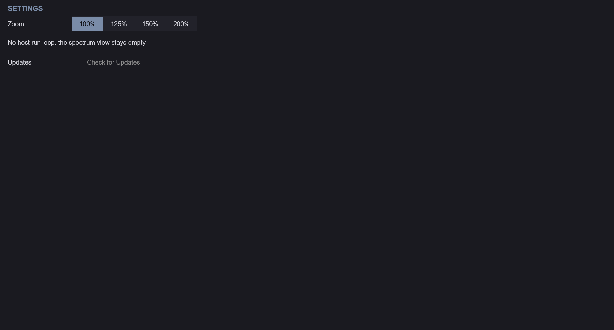
The SETTINGS tab holds the second zoom selector and a note about the harmonic displays: in a host that provides neither the VST3 data exchange nor a run loop, no frames arrive and the displays stay empty. The sound is not affected.
Click PRESETS in the header to open the browser. Categories appear as tabs, with All first. Selecting a preset shows its one-line comment; double-clicking it loads it. Loading restores every saved setting — both endpoints and their names, the macros, the note behaviour, the morph controls, the Edit Target and the seed — and returns Compare to A·B. Save writes the complete current state as a user preset.
C:\ProgramData\Krate Audio\Profundum\ (Windows),
/Library/Application Support/Krate Audio/Profundum/
(macOS) and /usr/share/krate-audio/profundum/
(Linux).Documents/Krate Audio/Profundum/ in your home
folder, one folder per category.73 presets ship with the plugin in seven categories: Sub, Resonant, Harmonic, Driven, Plucked, Animated and Kicks. Each one is built around one capability of the instrument and names it at the start of its comment, so the library also works as a tour of the controls. Every preset is rendered during the build and checked to make sound, stay bounded, differ measurably from the others, keep its low end intact in a mono sum and make its named capability audible. Five of them (Poly Spread, Poly Swell, Poly Ignition, Poly Rectifier and Poly Pluck) are stored in POLY with 4 voices, for playing chords; the rest are MONO.
Every preset holds two designed sounds. Endpoint A is what loads (Halfway Morph loads halfway between the two); endpoint B is a second sound in the same family, described in each comment (“Morph to B …” or “endpoint B …”). Sweep Bass Morph to travel between them: B sits within 3 dB of A’s level, so what changes is the sound, not the volume.
| Preset | Comment |
|---|---|
| Bedrock | Anchor Level: the Sine Anchor in LOCK at level 1 under a dark core grained by the Fold Character, with Mass 70 for a heavy floor and a faint spread on top. Morph to B warms it into a driven Tube bass with a body. |
| Triangle Floor | Anchor Sine to Triangle: a Triangle Anchor at level 1 under a sine core with a short 3 semitone thump and a spread top, a hollow-edged floor. Morph to B crushes it: a body, fold and Crush over a wide image. |
| Rounded Weight | Anchor Sine to Rounded Sine: a Rounded Sine Anchor at level 1 under a sine core warmed by a little Tube, with Mass 70, soft but weighty. Morph to B bites: a body, a BITE-shaped fold and Bite over a wide image. |
| Lopsided Sub | Anchor Sine to Asymmetric Sine: an Asymmetric Sine Anchor gives the sub a lopsided, even-harmonic push, echoed by a lopsided drive, a light fold and a touch of Fracture. Morph to B crushes it wide. |
| Under Octave | Anchor Sine to Octave Down: the Octave Down Anchor puts a sub an octave under a Crush-grained core with a light fold. Morph to B bites: more body, a BITE-shaped fold, Bite and an Asymmetric Anchor, wide. |
| Long Tail | Morph Mod Wheel: the Mod Wheel carries the sound from A to B (Amount 1; wheel down plays A), and while it drives the morph it no longer adds Mass. A lets a folded, wide body ring on over a Triangle Anchor with a 2000 ms release; wheel up darkens it into a mono Tube sub with a 3.5 s tail. |
| Heavy Mass | Mass Amount: Mass at 100 with a Rounded Anchor at 0.5 and a 4 semitone drop, the heaviest held weight. Morph to B drives it: a body, fold and Tube over an octave-down Anchor. |
| Continuous Phase | NoteMemory OscillatorContinuous: MONO with Retrigger Reset; the oscillator runs on through every note, a Fracture-edged fold over a Triangle Anchor. Morph to B crushes it wide. |
| Weight Lever | Macros Weight: a clean sine sub with a soft 20 ms attack under a WIDE image, the Weight macro stored at 0.6. Morph to B bites: a body, a BITE-shaped fold and Bite over a Triangle Anchor. |
| Mono Bedrock | Reference Solid: a SOLID image on both endpoints over a warm Tube 0.4 sub with a light fold and an octave-down Anchor, the mono floor that every widened preset is heard against. Morph to B fractures it, still mono. |
| Locked Floor | Reference Lock: the Anchor held in LOCK under a Triangle waveform with a SPREAD image, a steady floor with no punch. Morph to B drives it: a body, fold and Tube over a wide image. |
| Bedrock Sine | Reference Sine: a pure Sine Anchor on both endpoints under a WIDE image with a 5 semitone drop; endpoint B adds a heavy, crushed harmonic body to morph into. |
| Preset | Comment |
|---|---|
| Glide Path | Pitch Glide: MONO legato with a 200 ms portamento sliding a hollow, Fracture-edged body, wide; NoteMemory Legato keeps the phase across each slide. Morph to B drives the slide with Tube. |
| Slow Swell | Envelope Amp Attack: a 500 ms attack swells a resonant body up to full sustain, a light Rectify adding a glassy octave over an Asymmetric Anchor. Morph to B opens it into a hollow, wide, slower glow. |
| Gravity Well | Field Gravity: Gravity at 1 pulls the low band of a folded SPREAD image at spread 1 back to the centre, over an octave-down Anchor. Morph to B darkens it into a Crush-grained well with half the pull. |
| Halfway Morph | Morph Position Half: a round endpoint A against a hollow, bright, driven endpoint B, stored halfway at 0.5. |
| Restrike | NoteMemory AlwaysRetrigger: MONO with Retrigger Reset, every note restrikes a Fracture-grained, folded body from the start, wide. Morph to B restrikes a lopsided, Rectify-edged edge, mono, an octave deep. |
| Legato Line | NoteMemory Legato: MONO with Retrigger Reset; overlapping notes carry the phase on, a joined, Tube-warmed line over a Triangle Anchor. Morph to B fractures the line, wide. |
| Loose Ends | Macros Tight Loose: a half-sustain body with the Tight Loose macro at 0.5, loose ends around a SPREAD image. Morph to B bites: a body, a fold and Bite over a Triangle Anchor, wide. |
| Poly Swell | Morph Mod Envelope: every chord’s envelope carries the morph from A to B and holds it there (Amount 1, an instant attack, Sustain 1). A swells a folded, shifted body under every held chord in Poly, wide over a Rounded Anchor; B swells warmer and slower with Tube. |
| Preset | Comment |
|---|---|
| Edge Ignition | Core Excitation Mix: a sine recipe pushed to edge 1 with the excitation mix and drive at full, igniting with a fast 7 semitone drop; Harmonic Fold 50 adds folded overtones over a Triangle Anchor. Morph to B burns it: Rectify, a lopsided drive and a wide image. |
| Biting Reed | Core Shape: a saw-like recipe at edge 0.5 with SHAPE at 1, the BITE end, snapping wide; the reed snarls on every note. Morph to B warms it into a mono Tube reed an octave deep. |
| Pressure Front | Mass Dynamics Gain: Mass 100 on a heavy harmonic body, the dynamics gain pressing the front of each note. Morph to B turns it into a dark, mono, Crush-grained sub with a softer front. |
| Wide Harmonics | Field Solid to Spread: the SPREAD image at spread 1 opens a folded, Bite-edged harmonic body while the sub stays centred. Morph to B darkens it into a Tube-warmed spread an octave deep. |
| Spread Choir | Field Spread: SPREAD at spread 0.9 over a high, folded body touched by Fracture, a choir of partials around a centred floor. Morph to B turns it into a Rectify-edged choir. |
| Morph Span | Morph Position Full: endpoint A is a clean sub, endpoint B a driven harmonic growl; Morph from 0 to 1 crosses the whole span. |
| Envelope Restart | NoteMemory EnvelopeRetriggerOnly: MONO with Retrigger Reset; each note restarts the envelope but not the oscillator, a Crush-grained, folded edge, wide. Morph to B rounds it into a mono Tube body. |
| Dark To Bright | Macros Dark Bright: a heavy harmonic body with the Dark Bright macro at 0.5; endpoint B is a darker, rounder, wider twin an octave deep. |
| Poly Spread | Morph Mod Envelope: every chord’s envelope carries the morph from A to B and holds it there (Amount 1, an instant attack, Sustain 1). A is a hollow, Tube-coloured, folded body spread wide in SPREAD over a Rounded Anchor, played as chords in Poly; B spreads darker Tube chords. |
| Stiff Wire | Core Stiffness: the upper harmonics bend sharp of the series, as on a stiff steel string, for a metallic, bell-edged bass that grows stiffer up the keyboard. Morph to B bends them further and bites, wide. |
| Preset | Comment |
|---|---|
| Folded Mass | Core Harmonic Fold: Harmonic Fold at 100 over a deep core with some body, sharpened by Bite and spread wide, with an Asymmetric Anchor at 0.6 holding the floor. Morph to B crushes it: Crush, the BITE shape and an octave-down Anchor. |
| Valve Pressure | Character Tube: the Tube algorithm at Amount 1 for full valve pressure, with Mass 90 over an octave-down Anchor at 0.5, wide. Morph to B folds it: a body, excitation and a BITE fold under a brighter Tube, mono. |
| Folding Wire | Character Wavefold: the Fold algorithm at Amount 1, a wire-bright wavefold over a mid core and a Triangle Anchor, snapping wide. Morph to B softens it into a mono, lightly folded body an octave deep. |
| Rectified Floor | Morph Mod Envelope: every note leaps 60 percent of the way from the Rectify floor toward its folded B, then settles near a third (Amount 0.6, an instant attack, Sustain 0.6). A is Rectify at Amount 1 with Tone 0.4 over a floor-heavy, lightly folded core and an Asymmetric Anchor at 0.6; B folds a fuller body under a lighter Rectify, wide. |
| Bite Down | Character Bite: Bite at Amount 1 with the Transient Attack at +12 dB over a Rounded Anchor, so every note bites down, wide. Morph to B folds it into a mono body an octave deep with half the Bite and no transient boost. |
| Crushed Basalt | Character Crush: Crush at Amount 1 grinds a lightly folded core while a Triangle Anchor at 0.5 keeps the fundamental. Morph to B turns it lopsided under a lighter Crush, an octave deep and wide. |
| Fault Line | Character Fracture: Fracture at Amount 1 on a harmonic-rich core; the Anchor in FOLLOW tracks the fractured pitch. Morph to B softens it: a fuller, narrower body under a lighter Fracture. |
| Rectified Follow | Anchor Lock to Follow: Rectify at Amount 1 doubles the core and the Anchor in FOLLOW at level 1 goes with it, wide. Morph to B grinds it into a mono Crush body over a locked Triangle Anchor. |
| Fed Fold | Anchor Fold Feed: Harmonic Fold 100 with the Anchor Fold Feed at 1, the Anchor driven into the folder, snapping wide. Morph to B bites: a body, a BITE fold and Bite with less feed, mono. |
| Wide Rectifier | Field Solid to Wide: Rectify at 0.5 with Tone 0.5 over a lightly folded body and a Rounded Anchor under the WIDE image at spread 1. Morph to B bites, wide, an octave deep. |
| Clean To Violent | Macros Clean Violent: a lightly driven core over a Triangle Anchor with the Clean Violent macro stored at 0.4, wide, with room to turn toward violent. Morph to B strains it with a fold and Fracture. |
| Poly Ignition | Morph Mod Envelope: every chord’s envelope carries the morph from A to B and holds it there (Amount 1, an instant attack, Sustain 1). A is full edge excitation through Bite on a WIDE image over a Rounded Anchor, a driven chord bass in Poly; B warms the chords with Tube, an octave deep. |
| Poly Rectifier | Character Rectify: full Rectify on a brighter body over a Triangle Anchor, wide, rectified chords in Poly. Morph to B darkens them into mono chords under a lighter Rectify. |
| Struck Fold | Morph Mod Velocity: how hard each note is struck sets how far it morphs from A toward B (Amount 1; velocity 127 reaches B). A is a warm, lightly folded Tube bass over a lopsided Anchor; struck hard it cracks into B, a Fracture-split fold with a 7 semitone snap, wide. |
| Phase Bite | Core Phase 60: the upper harmonics turned against the fundamental make a peaky wave, so the Tube at 0.6 over Harmonic Fold 15 bites much harder than into the same spectrum smooth. Morph to B smooths the phase into a dark, wide Crush. |
| Preset | Comment |
|---|---|
| Punch Anchor | Anchor Lock to Punch: the Anchor in PUNCH, a 9 dB boost over 40 ms, under a 300 ms pluck that drops 5 semitones into a Crush-grained body with a Rounded Anchor. Morph to B turns the pluck into a longer, biting note. |
| Ghost Kick | Anchor Lock to Ghost: the Anchor in GHOST for 100 ms under a short decay of a Bite-edged, folded body, a kick-like thump. Morph to B crushes it into a wide tap. |
| Dropping Stone | Pitch Drop Amount: a 24 st drop over 200 ms at every note, a Tube-warmed, folded stone falling into the floor. Morph to B halves the drop and fractures it wide. |
| Slow Fall | Pitch Drop Time: a 24 st drop stretched to 500 ms, a slow fall onto the note through a hollow fold over an Asymmetric Anchor, wide. Morph to B turns it into a mono Rectify sub with half the drop. |
| Curved Drop | Pitch Drop Shape: a 24 st drop with shape 1, the curve bending late into the pitch over a Triangle Anchor with a spread top. Morph to B bites it, wide, with a gentler curve. |
| Rebound | Pitch Drop Rebound: a 24 st drop with rebound 1 that undershoots and bounces back up to the note, a Crush-grained, folded body over a Rounded Anchor. Morph to B warms it into a wide Tube bounce. |
| Hard Attack | Mass Transient Attack: the Transient Attack at +12 dB snaps the front of a folded harmonic pluck with a 5 semitone snap. Morph to B rounds it into a soft mono Tube note an octave deep. |
| Poly Pluck | Envelope Amp Release: a short decay to a lower sustain with a long release, folded chords over a Triangle Anchor that ring out wide in Poly. Morph to B bites them. |
| Preset | Comment |
|---|---|
| Orbiting Field | Field Motion: Field Motion at depth 1 orbits a SPREAD image at spread 1 around a folded, Bite-edged core over an Asymmetric Anchor. Morph to B darkens it into a wide Tube orbit an octave deep. |
| Mass Tide | Motion Cycle to Mass: a slow CYCLE swells and drains the Mass of a warm Tube-driven body under an Anchor at 0.5. Morph to B whips it into a fractured, wide storm at 1 Hz. |
| Breathing Depth | Motion Cycle to Depth: a CYCLE breathes the core Depth of a heavy, Crush-grained harmonic body in and out over a Triangle Anchor, wide. Morph to B breathes a warm, mono Tube body. |
| Body Wave | Motion Cycle to Body: a CYCLE sweeps the Body of a Rectify-edged harmonic core over a Rounded Anchor, a slow wave through the mids. Morph to B waves a Bite-edged body, wide. |
| Edge Cycle | Motion Cycle to Edge: a saw-like recipe whose Edge a CYCLE opens and closes, snapping wide. Morph to B sweeps a folded, Fracture-grained body, mono, an octave deep. |
| Shifting Spectrum | Motion Cycle to Shift: a slow CYCLE drifts the spectral Shift of a heavy harmonic body up and down. Morph to B shifts a warm Tube body over a Triangle Anchor. |
| Envelope Mass | Motion Env to Mass: a Unipolar ENV, 1000 ms up and 1000 ms down, swells the Mass from 0 at every note and lets it settle. Morph to B swells a Crush-grained, folded body, wide. |
| Drifting Weight | Motion Drift to Mass: a DRIFT source at smoothness 0.5 wanders the Mass, different under every seed. Morph to B drifts a folded, Fracture-grained body. |
| Tidal Fold | Morph Mod Cycle: a slow, free-running Square Cycle (0.05 Hz, Amount 1) swings the whole sound between A and B, holding each for 10 s. A is a dark, round sub with a hollow body and a little Tube over a Rounded Anchor; B is the tide coming in: a bright, Rectify-edged fold, spread wide. |
Every kick decays to silence within a second (sustain 0), so a held note plays one hit; the pitch drop starts above the note and lands on it.
| Preset | Comment |
|---|---|
| Eight Oh Boom | Pitch Drop Amount: a 36 st drop over 60 ms into a long, round sine boom with a little Tube warmth, the classic tuned 808. Morph to B drives it into a folded, saturated boom. |
| Punch Kick | Anchor Lock to Punch: the Anchor in PUNCH, a 9 dB boost over 40 ms, under a short Bite-edged kick with a 24 st drop and a +6 dB transient. Morph to B crushes it into a dry, spread snap. |
| Folded Kick | Character Wavefold: the Fold algorithm at full Amount folds a 30 st drop into a buzzing, distorted kick over a Triangle Anchor. Morph to B adds Harmonic Fold 90 and Mass 85 for a heavier fold. |
| Sub Boom | Pitch Drop Time: a 24 st drop stretched over 250 ms into a long sub boom over an Octave Down Anchor, warm and mono. Morph to B snaps the drop short and rectifies the tail. |
| Techno Kick | Mass Transient Attack: a +9 dB attack with the sustain pulled down 3 dB, a tight Bite kick with a fast 24 st drop. Morph to B rounds it into a Tube thump. |
| Rebound Kick | Pitch Drop Rebound: a 24 st drop with rebound 0.8 that dips under the note and springs back, a Fracture-grained kick over an Asymmetric Anchor. Morph to B bites it. |
| Gabber Kick | Character Rectify: a hard-rectified kick at Mass 85 with a 28 st drop, the distorted hardcore hit, wide on top. Morph to B rectifies it softer and darker, mono. |
| Lo-Fi Kick | Character Crush: a soft, dusty kick through the Crush algorithm with a gentle 20 st drop and a dark tone. Morph to B crushes it harder and brighter. |
| Deep 808 | Pitch Drop Amount: a 40 st drop over 60 ms into a pure sine boom with a 500 ms decay, the deep, clean 808. Morph to B warms it with Tube and fold over a Rounded Anchor. |
| Club Kick | Anchor Lock to Punch: the Anchor in PUNCH with a 12 dB boost under a short sine kick, a 48 st drop over 25 ms, a +6 dB transient and the body lifted 9 dB, the tight club kick. Morph to B bites it, wide. |
| Hardstyle Kick | Character Tube: Tube at 0.8 after Harmonic Fold 55 at Mass 70 drives a 36 st drop with a curved fall into a hard, distorted kick. Morph to B drives the Tube and fold harder. |
| Platform | Formats | Notes |
|---|---|---|
| Windows 10+ | VST3 | 64-bit |
| macOS 12+ | VST3, Audio Unit | Universal (Intel + Apple Silicon) |
| Linux | VST3 | x86-64 |
State saved on any platform loads identically on the others.
Profundum is free and open-source software from Krate Audio, released under the MIT license.